Каталог магистерских программ на русском языке
Данные актуальны на: 30.08.2025
Фильтры
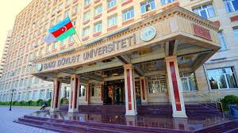
Бакинский государственный университет (Bakı Dövlət Universiteti)
Описание: Бакинский государственный университет (БГУ) — первое высшее учебное заведение Азербайджана. Он был учрежден парламентом Азербайджанской Демократической Республики 1 сентября 1919 года.
Адрес: Akademik Zahid Xəlilov küçəsi - 33, AZ 1148, Bakı şəhəri, AZ-1073/1, Azərbaycan Respublikası.
Расстояние от ст. 28 мая: 3.17 км
Программы:
| Специальность | Стоимость (AZN) |
|---|---|
| Биология (Biologiya) | 2550 |
| География (Coğrafiya) | 2550 |
| Журналистика (Jurnalistika) | 2550 |
| Математика (Riyaziyyat) | 2550 |
| Почвоведение и агрохимия (Torpaqşünaslıq və aqrokimya) | 2550 |
| Туризм и гостиничное дело (Turizm və otelçilik) | 2550 |
| Физика (Fizika) | 2550 |
| Филология (Filologiya) | 2550 |
| Химия (Kimya) | 2550 |
| Экология (Ekologiya) | 2550 |
| Международные отношения (Beynəlxalq münasibətlər) | 3400 |
| Психология (Psixologiya) | 3400 |
| Социальная работа (Sosial iş) | 3400 |
| Социально-психологическая служба в образовании (Təhsildə sosial-psixoloji xidmət) | 3400 |
| Юриспруденция (Hüquqşünaslıq) | 5950 |
| Политология (Politologiya) | не указано |
| Преподавание географии (Coğrafiya müəllimliyi) | не указано |
| Преподавание истории (Tarix müəllimliyi) | не указано |
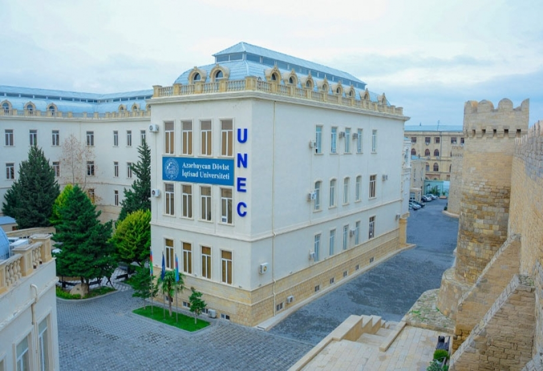
Азербайджанский государственный экономический университет (Azərbaycan Dövlət İqtisad Universiteti)
Описание: Азербайджанский государственный экономический университет (UNEC) был основан в 1930 году и является одним из крупнейших высших учебных заведений на Южном Кавказе.
Адрес: İstiqlaliyyət küçəsi, 6, Bakı, Səbail, AZ1001.
Расстояние от ст. 28 мая: 2.19 км
Программы:
| Специальность | Стоимость (AZN) |
|---|---|
| Пищевая инженерия (Qida mühəndisliyi) | 2000 |
| Информационная безопасность (İnformasiya təhlükəsizliyi) | 2200 |
| Информационные технологии (İnformasiya texnologiyaları) | 2200 |
| Компьютерные науки (Kompüter elmləri) | 2200 |
| Маркетинг (Marketinq) | 2200 |
| Дизайн (Dizayn) | 2300 |
| Менеджмент (Menecment) | 2300 |
| Экономика (İqtisadiyyat) | 2300 |
| Бухгалтерия (Mühasibat) | 2500 |
| Управление бизнесом (Biznesin idarə edilməsi) | 2500 |
| Финансы (Maliyyə) | 2500 |
| Организация и управление бизнесом (MBA) (Biznesin təşkili və idarə edilməsi (MBA)) | 3700 |
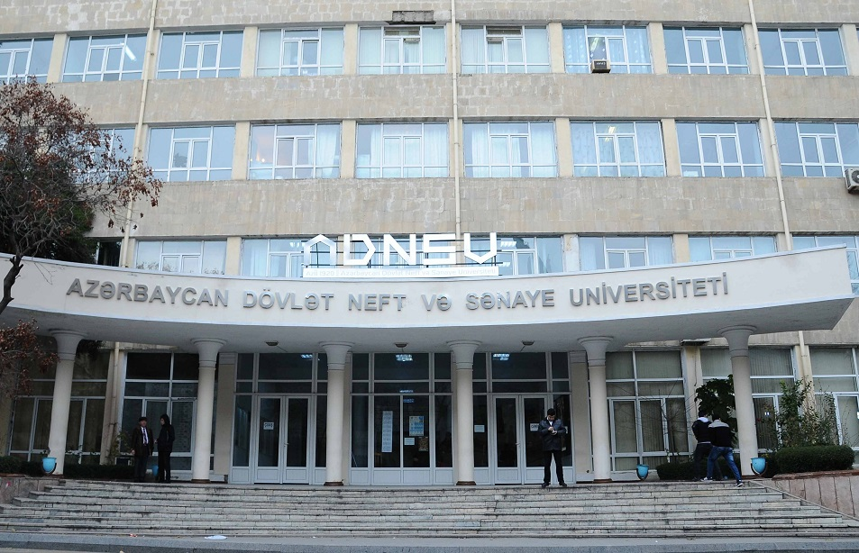
Азербайджанский государственный университет нефти и промышленности (Azərbaycan Dövlət Neft və Sənaye Universiteti)
Описание: Азербайджанский государственный университет нефти и промышленности (АГУНП) — один из старейших, крупнейших и престижнейших университетов Азербайджана, отметивший в 2020 году свое 100-летие.
Адрес: Bakı şəhəri, Azadlıq prospekti, 20, AZ1010.
Расстояние от ст. 28 мая: 0.17 км
Программы:
| Специальность | Стоимость (AZN) |
|---|---|
| Инженерия геологии и геофизики (Geologiya və geofizika mühəndisliyi) | 5100 |
| Информационные технологии (İnformasiya texnologiyaları) | 5100 |
| Компьютерная инженерия (Kompüter mühəndisliyi) | 5100 |
| Нефтегазовая инженерия (Neft-qaz mühəndisliyi) | 5100 |
| Приборостроение (Cihaz mühəndisliyi) | 5100 |
| Химическая инженерия (Kimya mühəndisliyi) | 5100 |
| Экологическая инженерия (Ekologiya mühəndisliyi) | 5100 |
| Энергетическая инженерия (Energetika mühəndisliyi) | 5100 |
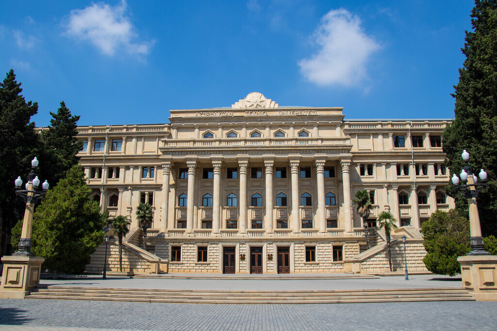
Azərbaycan Texniki Universiteti
Описание: Азербайджанский технический университет (АзТУ) — высшее учебное заведение Азербайджана, специализирующееся в технической области.
Адрес: Hüseyn Cavid prospekti 25, Bakı, AZ1073.
Расстояние от ст. 28 мая: 0.68 км
Программы:
| Специальность | Стоимость (AZN) |
|---|---|
| Информационная безопасность (İnformasiya təhlükəsizliyi) | 3315 |
| Информационные технологии (İnformasiya texnologiyaları) | 3315 |
| Компьютерная инженерия (Kompüter mühəndisliyi) | 3315 |
| Компьютерные науки (Kompüter elmləri) | 3315 |
| Машиностроение (Maşın mühəndisliyi) | 3315 |
| Менеджмент (Menecment) | 3315 |
| Механическая инженерия (Mexanika mühəndisliyi) | 3315 |
| Экономика (İqtisadiyyat) | 3315 |
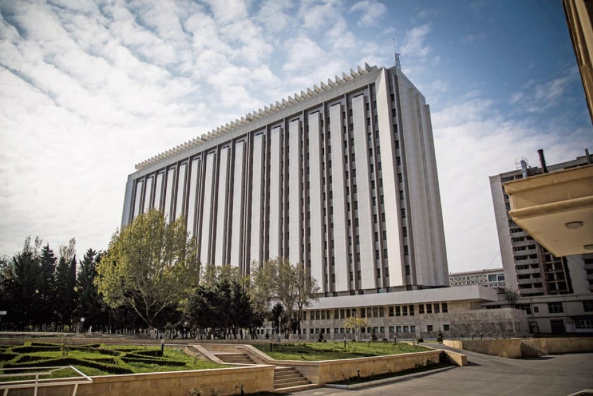
Азербайджанский университет архитектуры и строительства (Azərbaycan Memarlıq və İnşaat Universiteti)
Описание: Азербайджанский университет архитектуры и строительства (Azərbaycan Memarlıq və İnşaat Universiteti) — это государственный университет, расположенный в Баку, Азербайджан, специализирующийся на гражданском строительстве и архитектуре.
Адрес: Küçə Ayna Sultanova, 5, Bakı AZ1073, Azərbaycan.
Расстояние от ст. 28 мая: 2.43 км
Программы:
| Специальность | Стоимость (AZN) |
|---|---|
| Архитектура (Memarlıq) | 4250 |
| Дизайн (Dizayn) | 4250 |
| Инженерия коммуникационных систем (Kommunikasiya sistemləri mühəndisliyi) | 4250 |
| Инженерия транспортного строительства (Nəqliyyat tikintisi mühəndisliyi) | 4250 |
| Мелиоративная инженерия (Meliorasiya mühəndisliyi) | 4250 |
| Организация и управление бизнесом (MBA) (Biznesin təşkili və idarə edilməsi (MBA)) | 4250 |
| Строительная инженерия (İnşaat mühəndisliyi) | 4250 |
| Экономика (İqtisadiyyat) | 4250 |
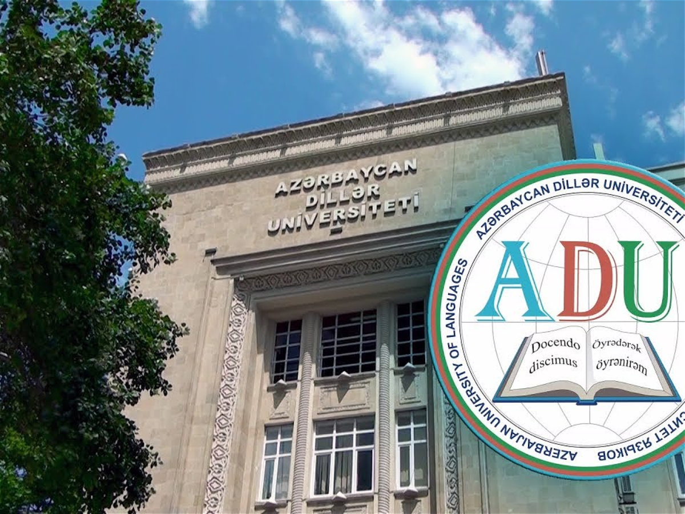
Азербайджанский университет языков (Azərbaycan Dillər Universiteti)
Описание: Азербайджанский университет языков (АУЯ) — это государственный университет, расположенный в Баку, Азербайджан. Он был основан в 1973 году как высшее учебное заведение, специализирующееся на обучении иностранным языкам.
Адрес: Bakı şəhəri, Rəşid Behbudov küçəsi, 134.
Расстояние от ст. 28 мая: 0.68 км
Программы:
| Специальность | Стоимость (AZN) |
|---|---|
| Перевод (Tərcümə) | 5100 |
| Преподавание иностранного языка (по языкам) (Xarici dil müəllimliyi (dillər üzrə)) | 5100 |
| Преподавание языка и литературы (по языкам) (Dil və ədəbiyyat müəllimliyi (dillər üzrə)) | 5100 |
| Регионоведение (Regionşünaslıq) | 5100 |
| Филология (Filologiya) | 5100 |
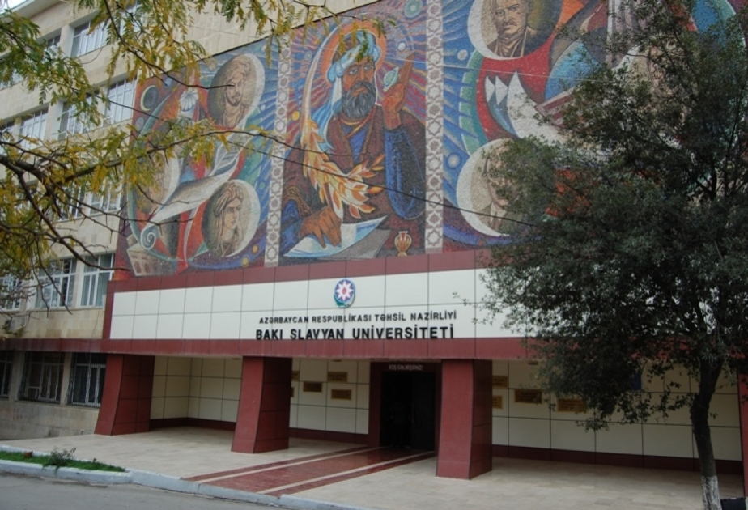
Бакинский славянский университет (Bakı Slavyan Universiteti)
Описание: Бакинский славянский университет (БСУ) — государственное высшее учебное заведение, находящееся в ведении Министерства образования Азербайджанской Республики.
Адрес: Süleyman Rüstəm küçəsi, 33, Bakı, Nəsimi, AZ1014.
Расстояние от ст. 28 мая: 0.79 км
Программы:
| Специальность | Стоимость (AZN) |
|---|---|
| Психология (Psixologiya) | 2200 |
| Педагогика (Pedaqogika) | 2300 |
| Международные отношения (Beynəlxalq münasibətlər) | 2500 |
| Филология (Filologiya) | 2600 |
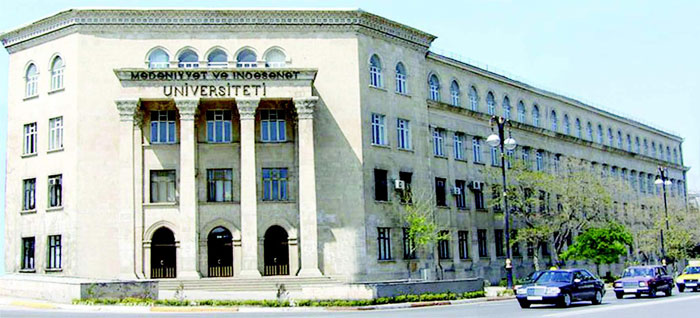
Азербайджанский государственный университет культуры и искусств (Azərbaycan Dövlət Mədəniyyət və İncəsənət Universiteti)
Описание: Azərbaycan Dövlət Mədəniyyət və İncəsənət Universiteti (ADMİU) 1923-cü ildə Bakı Teatr Məktəbinin bazasında yaradılmışdır. 1991-ci ildə университет statusu qazanmışdır. ADMİU, Azərbaycanda mədəniyyət və incəsənətin əksər sahələrində yüksək səviyyəli mütəxəssis hazırlayan, geniş yaradıcılıq imkanlarına və elmi-metodiki bazaya malik yeganə ali təhsil müəssisəsidir.
Адрес: İnşaatçılar prospekti 39, AZ1065, Bakı şəhəri, Yasamal.
Расстояние от ст. 28 мая: 3.29 км
Программы:
| Специальность | Стоимость (AZN) |
|---|---|
| Организация и управление бизнесом (MBA) (Biznesin təşkili və idarə edilməsi (MBA)) | 4250 |
Бакинская музыкальная академия имени Узеира Гаджибейли (Üzeyir Hacıbəyli adına Bakı Musiqi Akademiyası)
Описание: Мингечаурский государственный университет был создан Указом Президента Азербайджанской Республики № 1335 от 24 июля 2015 года.
Адрес: D.Əliyeva küçəsi, 21, Mingəçevir AZ4500, Azərbaycan Respublikası.
Расстояние от ст. 28 мая: 240.39 км
Программы:
| Специальность | Стоимость (AZN) |
|---|---|
| Вокальное искусство (Vokal sənəti) | 4500 |
| Дирижирование (Dirijorluq) | 4500 |
| Инструментальное исполнительство (İnstrumental ifaçılıq) | 4500 |
| Исполнительство популярной музыки и джаза (Populyar musiqi və caz ifaçılığı) | 4500 |
| Композиторство (Bəstəkarlıq) | 4500 |
| Музыковедение (Musiqişünaslıq) | 4500 |
| Режиссура (Rejissorluq) | 4500 |
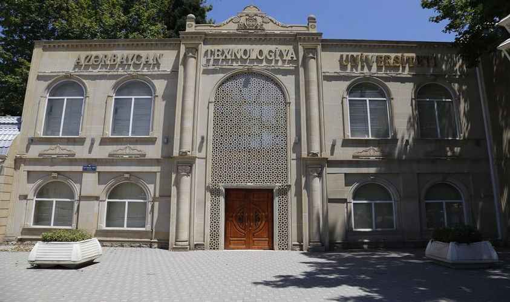
Азербайджанский технологический университет (Azərbaycan Texnologiya Universiteti)
Описание: Азербайджанский технологический университет (АТУ) — высшее учебное заведение, расположенное в городе Гянджа. Университет готовит высококвалифицированные кадры для таких областей региона, как пищевая, текстильная и легкая промышленность, туризм, логистика, металлургия и ИКТ.
Адрес: Şah İsmayıl Xətai prospekti, 103, Gəncə, AZ2011.
Расстояние от ст. 28 мая: 296.35 км
Программы:
| Специальность | Стоимость (AZN) |
|---|---|
| Бухгалтерия (Mühasibat) | 1300 |
| Виноделие (Şərabçılıq) | 1300 |
| Государственное и муниципальное управление (Dövlət və bələdiyyə idarəetməsi) | 1300 |
| Дизайн (Dizayn) | 1300 |
| Инженерия автоматизации процессов (Proseslərin avtomatlaşdırılması mühəndisliyi) | 1300 |
| Инженерия безопасности жизнедеятельности (Həyat fəaliyyətinin təhlükəsizliyi mühəndisliyi) | 1300 |
| Инженерия технологий широко используемых товаров (Çoxişlənən malların texnologiyası mühəndisliyi) | 1300 |
| Инженерия технологических машин и оборудования (Texnoloji maşın və avadanlıqlar mühəndisliyi) | 1300 |
| Информационные технологии (İnformasiya texnologiyaları) | 1300 |
| Компьютерная инженерия (Kompüter mühəndisliyi) | 1300 |
| Маркетинг (Marketinq) | 1300 |
| Машиностроение (Maşın mühəndisliyi) | 1300 |
| Менеджмент (Menecment) | 1300 |
| Металлургическая инженерия (Metallurgiya mühəndisliyi) | 1300 |
| Организация и управление промышленностью (Sənayenin təşkili və idarə edilməsi) | 1300 |
| Пищевая инженерия (Qida mühəndisliyi) | 1300 |
| Радиотехника и телекоммуникационная инженерия (Radiotexnika və telekommunikasiya mühəndisliyi) | 1300 |
| Сервис на транспорте (Nəqliyyatda servis) | 1300 |
| Туризм и гостиничное дело (Turizm və otelçilik) | 1300 |
| Управление бизнесом (Biznesin idarə edilməsi) | 1300 |
| Химическая инженерия (Kimya mühəndisliyi) | 1300 |
| Экологическая инженерия (Ekologiya mühəndisliyi) | 1300 |
| Экономика (İqtisadiyyat) | 1300 |
| Экспертиза и маркетинг потребительских товаров (İstehlak mallarının ekspertizası və marketinqi) | 1300 |
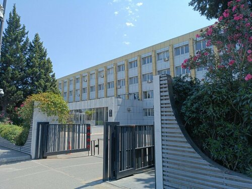
Азербайджанская государственная академия физической культуры и спорта (Azərbaycan Dövlət Bədən Tərbiyəsi və İdman Akademiyası)
Описание: Azərbaycan Dövlət Bədən Tərbiyəsi və İdman Akademiyası (ADBTİA) 1930-cu ildə təsis edilmiş, idman sahəsində ixtisaslaşmış bir ali təhsil müəssisəsidir. Akademiya, tələbələrə nəzəri və praktiki biliklər verərək onları peşəkar idmançı, məşqçi, idman meneceri və sağlamlık mütəxəssisi kimi hazırlayır.
Адрес: AZ 1072, Bakı şəhəri, Fətəli xan Xoyski prospekti, 98.
Расстояние от ст. 28 мая: 2.46 км
Программы:
| Специальность | Стоимость (AZN) |
|---|---|
| Тренерство (Məşqçilik) | 3500 |
| Менеджмент (Menecment) | 5100 |
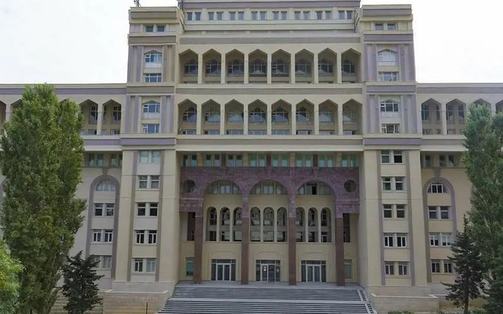
Азербайджанский медицинский университет (Azərbaycan Tibb Universiteti)
Описание: Азербайджанский медицинский университет (АМУ) — ведущее высшее учебное заведение в области медицинского образования в Азербайджане.
Адрес: Səməd Vurğun küçəsi 165, AZ1022.
Расстояние от ст. 28 мая: 1.16 км
Программы:
| Специальность | Стоимость (AZN) |
|---|---|
| Биология (Biologiya) | 11900 |
| Менеджмент (Menecment) | 11900 |
| Психология (Psixologiya) | 11900 |
| Фармацевтика (Əczaçılıq) | 11900 |

Национальная академия авиации (Milli Aviasiya Akademiyası)
Описание: Национальная академия авиации (НАА) является государственным высшим учебным заведением Азербайджанской Республики и входит в структуру Закрытого акционерного общества (ЗАО) 'Азербайджанские авиалинии'.
Адрес: AZ1045, Bakı şəhəri, Mərdəkan prospekti, 30.
Расстояние от ст. 28 мая: 26.2 км
Программы:
| Специальность | Стоимость (AZN) |
|---|---|
| Логистика и инженерия транспортных технологий (Logistika və nəqliyyat texnologiyaları mühəndisliyi) | 8000 |
| Менеджмент (Menecment) | 8000 |
| Аэрокосмическая инженерия (Aerokosmik mühəndislik) | 9000 |
| Юриспруденция (Hüquqşünaslıq) | 9000 |
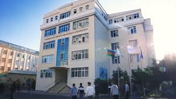
Азербайджанский университет туризма и менеджмента (Azərbaycan Turizm və Menecment Universiteti)
Описание: Azərbaycan Turizm və Menecment Universiteti (ATMU) Azərbaycan Respublikasında ali təhsilin bütün pillələrində turizm və menecment sahələri üzrə kadr hazırlığını həyata keçirən ali təhsil müəssisəsidir. Universitet 22 dekabr 2014-cü ildə Azərbaycan Respublikasının Prezidenti İlham Əliyevin sərəncamı ilə 2006-cı ildən fəaliyyət göstərən Azərbaycan Turizm İnstitutunun (ATİ) bazasında yaradılmışdır. ATMU Azərbaycan Respublikasının Dövlət Turizm Agentliyinin tabeliyində fəaliyyət göstərir və bakalavriatura, magistratura və doktorantura pillələrində, həmçincə əlavə təhsil proqramı üzrə tədris həyata keçirir.
Адрес: Koroğlu Rəhimov küçəsi, 822/23, Bakı, Nərimanov, AZ1110.
Расстояние от ст. 28 мая: 32.73 км
Программы:
| Специальность | Стоимость (AZN) |
|---|---|
| Туризм и гостиничное дело (Turizm və otelçilik) | 2200 |